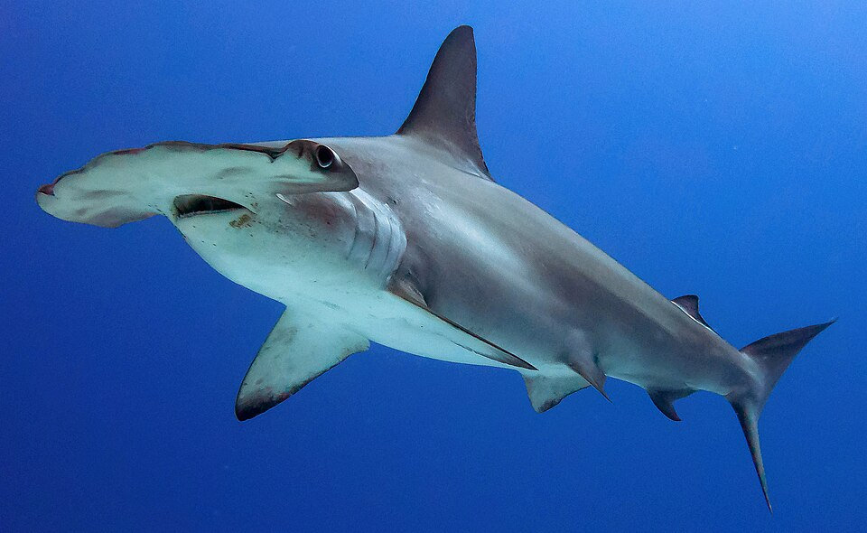

Tubarão-martelo-recortado
Sphyrna lewini
Habitat
Habita águas tropicais e subtropicais de diferentes oceanos. Pode ser encontrado próximo à costa, em plataformas continentais e ao redor de ilhas oceânicas. Os indivíduos jovens costumam permanecer em regiões costeiras rasas, enquanto os adultos podem realizar migrações para águas mais profundas.
Alimentação
É carnívoro e alimenta-se de peixes, lulas, polvos, crustáceos e outros animais marinhos. Sua cabeça larga permite ampliar a área de percepção sensorial, auxiliando na localização de presas escondidas na areia ou próximas ao fundo do mar.
Características
Apresenta a cabeça achatada e expandida lateralmente, formando um formato semelhante ao de um martelo. A parte frontal da cabeça possui uma borda curvada e recortada, característica que ajuda a diferenciá-lo de outras espécies de tubarão-martelo. Seu corpo é alongado, com coloração acinzentada ou marrom-oliva.
Curiosidades
- Pode formar grandes grupos com centenas ou até milhares de indivíduos.
- Possui sensores capazes de detectar pequenos sinais elétricos produzidos por outros animais.
- Sua cabeça diferenciada contribui para a percepção do ambiente e para a captura de presas.